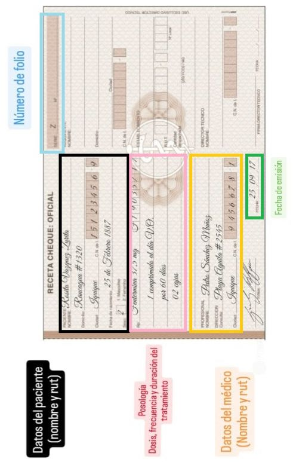

Apartado Profesional
Recuerda como profesionales de la salud y técnico en quÃmica y farmacia debemos siempre verificar:
Para recetas cheques verificar que la receta:
- No debe de tener enmiendas.
- Debe venir con el número del registro correspondiente al medicamento.
- Si la receta dice “digitalizada”, y se presenta de forma fÃsica esta debe de ser retenida y no dispensar los medicamentos.
- La receta no debe superar los 30 dÃas desde que esta fue emitida.